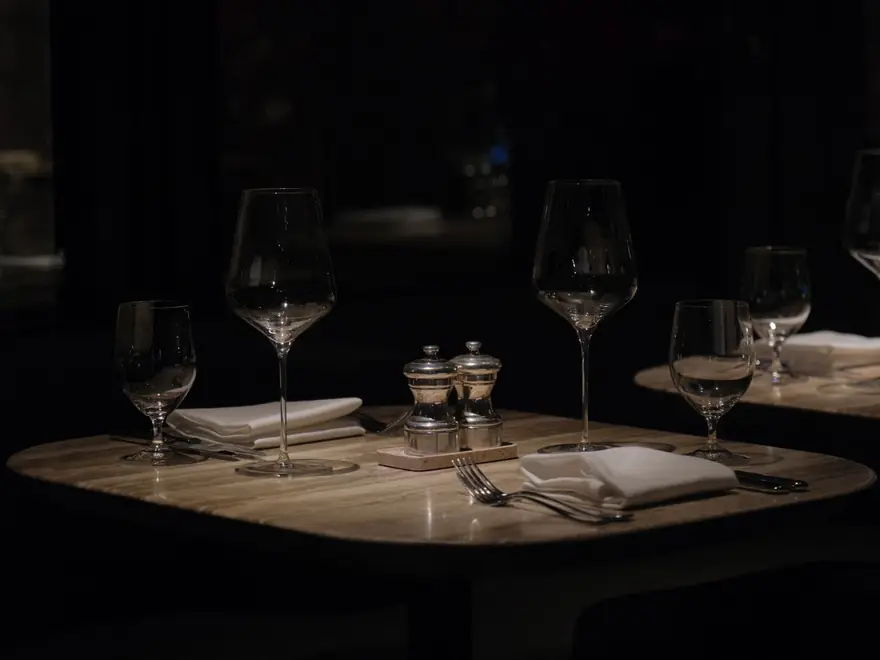
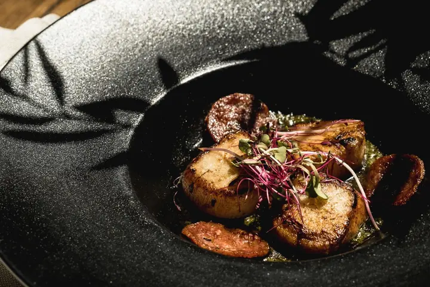
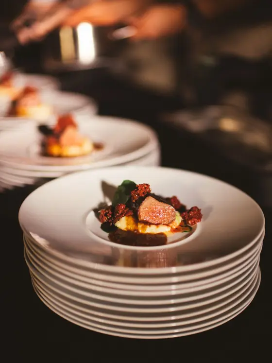

A seasonal table, in the heart of Lyon
Twenty-eight seats, a short menu changed every month, and producers I know by their first name.
- OpenTuesday to Saturday, lunch and dinner
- Address14 rue Exemple, 69002 Lyon
- Phone04 65 71 52 14
The spirit of the place
I opened Maison Calixte in 2019 with a simple idea: few dishes, but dishes I can look after one by one.
In the morning, I go to the quai Saint-Antoine market. What I find decides the lunch board. In the evening, the lights go down and the kitchen takes its time: slow cooking, reduced jus, desserts made to order.
Élise Calixte, chef
- 28seats, not one more
- 12producers less than 80 km away
- 1new menu every month

The essentials
Three plates that never leave the menu for long.
-

Seared scallops
19 €Brown butter, smoked celeriac purée and garden herbs.
-

Dombes duck breast
31 €Cooked pink, blackcurrant jus, creamy polenta and roast vegetables.
-

Thin fig tart
12 €Buckwheat shortcrust, almond cream and mountain honey.
The menu
It fits on one page and you read it here, with no file to download.
Starters
- Seared scallops19 €
- Brown butter, smoked celeriac, garden herbs.
- Slow-cooked eggVegetarian14 €
- Button mushroom cream, roasted hazelnuts.
- Homemade pâté en croûte16 €
- Poultry and pistachio, pickled vegetables.
Mains
- Dombes duck breast31 €
- Blackcurrant jus, creamy polenta, roast vegetables.
- Arctic char29 €
- Cooked skin side down, vin jaune beurre blanc, leeks.
- Roast squashVegetarian24 €
- Green Puy lentils, sage, sheep's milk tomme.
Desserts
- Thin fig tart12 €
- Buckwheat, almond cream, mountain honey.
- Chocolate and pink praline13 €
- Whipped ganache, Breton shortbread, praline pieces.
- Aged cheeses11 €
- Three cheeses of the moment, quince jam.
Market lunch29 €
Starter, main and dessert of the day. Tuesday to Friday, at lunchtime.
Tasting menu68 €
Five courses chosen by the chef. In the evening, for the whole table.
Prices include service. Meat from France. Allergies or special diet: tell us when booking, I'll adapt.



At the table
The duck breast was perfect and the service attentive without being intrusive. We took our time, nobody rushed us.
Hélène M., dinner for twoThe €29 lunch is worth many menus that cost twice as much. I go back every month for the new menu.
Antoine P., lunchtime regularThere were ten of us for a birthday. The menu was adapted for a vegetarian guest, without anything having to be asked twice.
Sarah and Julien, family meal
Opening hours and access
| Tuesday to Friday | 12:00 to 14:00 · 19:30 to 22:00 |
|---|---|
| Saturday | 19:00 to 22:30 |
| Sunday and Monday | Closed |
Book a table
Reply the same day, by email or by phone.